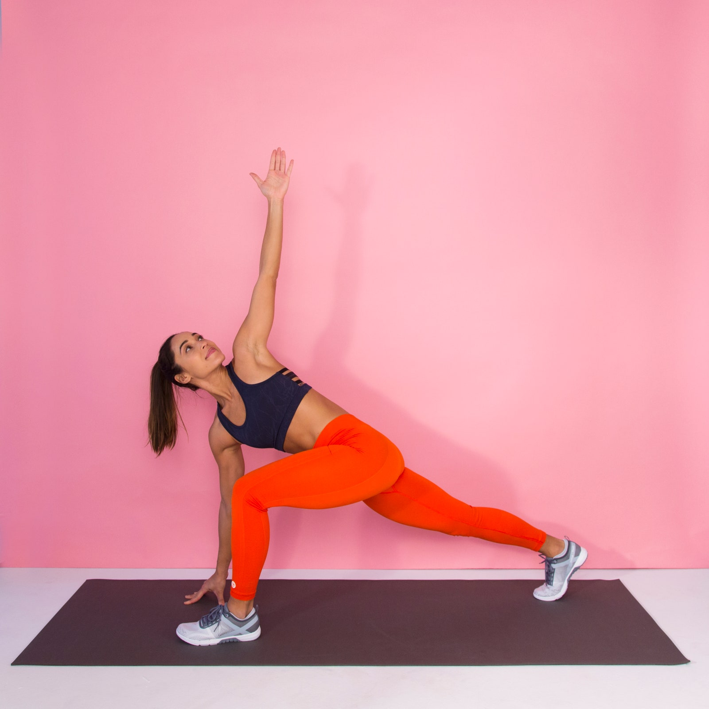

Stretches
Lunge Spinal Twist

perts says that this stretch is commonly referred to as the World's Greatest Stretch (WGS) in the fitness community
How do you do lunge spinal twists?
- Start standing with your feet together.
- Take a big step forward with your left foot, so that you are in a staggered stance.
- Bend your left knee and drop into a lunge, keeping your right leg straight behind you with your toes on the ground, so you feel a stretch at the front of your right thigh.
- Place your right hand on the floor and twist your upper body to the left as you extend your left arm toward the ceiling.
- Hold for 30 seconds to 2 minutes.
- Repeat on the other side.
Click here for the video tutorial
https://www.youtube.com/watch?v=RTOfV3WS780
What are the benefits of lunge spinal twists?
- Helps your glutes contract more fully as you engage your core.
- It is a great way to challenge your balance and engage the muscles used for any exercise you perform with one leg at a time
- It's also essential to help with posture-related pain or for people who sit for prolonged periods of time,